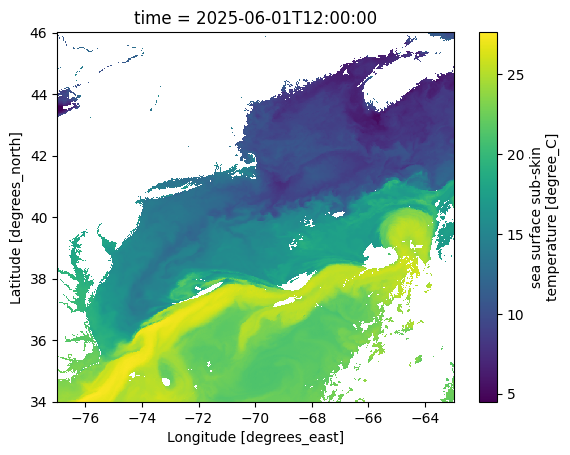
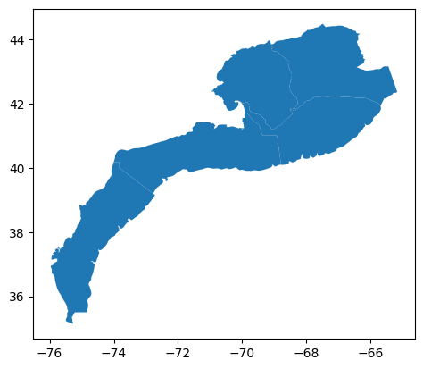
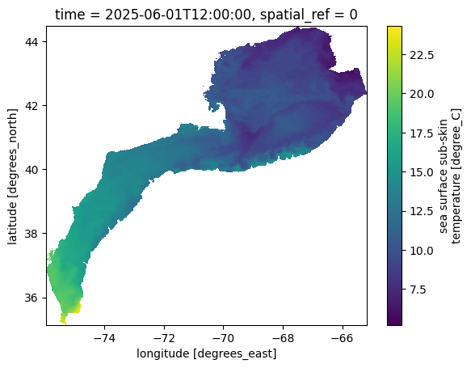
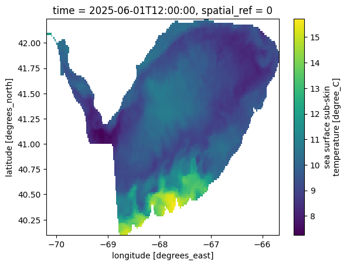
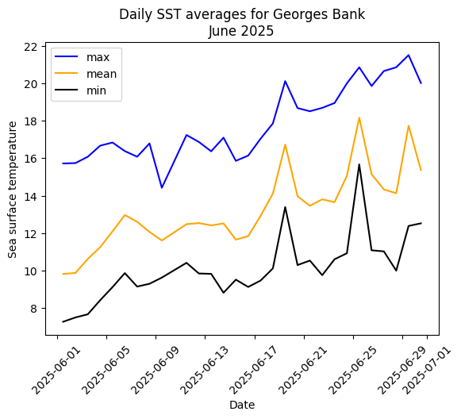

Intro to plotting#
Resources#
First, we are going to load 1 month of data.
# import packages
import requests
import xarray as xr
import geopandas as gpd
import rioxarray
import geopandas as gpd
from shapely.geometry import mapping
import matplotlib.pyplot as plt
# load ERDDAP URL
url = 'https://comet.nefsc.noaa.gov/erddap/griddap/noaa_coastwatch_acspo_v2_reanalysis.nc?sea_surface_temperature%5B(2025-06-01T12:00:00Z):1:(2025-06-30T12:00:00Z)%5D%5B(34):1:(46)%5D%5B(-77):1:(-63)%5D'
url_new = requests.get(url,verify=False).content
ds = xr.open_dataset(url_new)
C:\Users\haley.synan\AppData\Local\anaconda3\Lib\site-packages\urllib3\connectionpool.py:1099: InsecureRequestWarning: Unverified HTTPS request is being made to host 'comet.nefsc.noaa.gov'. Adding certificate verification is strongly advised. See: https://urllib3.readthedocs.io/en/latest/advanced-usage.html#tls-warnings
warnings.warn(
Now we can plot the first time step of the data
#create map of sst (first timestep)
ds.sea_surface_temperature[0].plot()
<matplotlib.collections.QuadMesh at 0x1cf0f4c3770>

Open a shapefile#
Now, we are going to use geopandas to open a shapefile. A shapefile is a data storage format that is a collection of interconnected files that work together to draw points, lines, or polygons on a map. Here we will load a shapefile of the 5 regions of the Northeast US Continental Shelf.
gdf = gpd.read_file('https://github.com/hsynan/READ-EDAB-Synan_hydrographic_climatologies/raw/refs/heads/main/data/shapefiles/NES_5REGIONS.zip')
gdf
| area | geometry | |
|---|---|---|
| 0 | 5.770158 | POLYGON ((-74.71113 36.50517, -74.71232 36.501... |
| 1 | 6.227196 | POLYGON ((-71.73448 39.95008, -71.74059 39.950... |
| 2 | 4.762347 | POLYGON ((-66.74085 40.75303, -66.74573 40.750... |
| 3 | 4.382310 | POLYGON ((-69.91489 42.02679, -69.98377 42.004... |
| 4 | 6.376634 | POLYGON ((-65.56925 42.16613, -65.68762 41.935... |
We can see that there are 5 separate polygons in this shapefile.
#visualize shapefile
gdf.plot()
<Axes: >

Now, we are going to extract a spatial subset from the SST data. We will use rioxarray to do this.
# rioxarray requires spatial dimensions and CRS to be set
ds.rio.set_spatial_dims(x_dim="longitude", y_dim="latitude", inplace=True)
ds.rio.write_crs("epsg:4326", inplace=True)
# Clip the dataset
clipped_ds = ds.rio.clip(gdf.geometry.apply(mapping), gdf.crs, drop=True)
#visualize
clipped_ds.sea_surface_temperature[0].plot()
<matplotlib.collections.QuadMesh at 0x1cf0f57ecc0>

Instead of clipping to the shape of all 5 of the polygons, we can also choose 1 polygon from the shapefiles to clip to. We will now clip to the Georges Bank shapefile and visualize that
single_polygon = gdf.iloc[[2]]
gb_ds = ds.rio.clip(single_polygon.geometry.apply(mapping), single_polygon.crs, drop=True)
gb_ds.sea_surface_temperature[0].plot()
<matplotlib.collections.QuadMesh at 0x1cf0f9d8650>

We can see we stil have the same dimensions, there are just fewer latitude and longitudes in this spatial subset.
clipped_ds
<xarray.Dataset> Size: 29MB
Dimensions: (time: 29, latitude: 467, longitude: 539)
Coordinates:
* time (time) datetime64[ns] 232B 2025-06-01T12:00:00 ....
* latitude (latitude) float32 2kB 44.47 44.45 ... 35.17 35.15
* longitude (longitude) float32 2kB -75.95 -75.93 ... -65.19
spatial_ref int32 4B 0
Data variables:
sea_surface_temperature (time, latitude, longitude) float32 29MB nan ......
Attributes: (12/63)
acknowledgement: Please acknowledge the use of the...
aggregator_version: V1.00
cdm_data_type: Grid
col_count: 18000
col_start: 0
collation_version: 2.11.0
... ...
summary: Sea surface temperature retrieval...
testOutOfDate: now-95days
time_coverage_end: 2025-06-30T12:00:00Z
time_coverage_start: 2025-06-01T12:00:00Z
title: Satellite Sea Surface Temperature...
Westernmost_Easting: -76.99Now we are going to create some daily spatial averages. This means we are going to take a daily SST average across all of the Georges bank, aka averaging across latitude and longitude.
mean_sst = gb_ds.sea_surface_temperature.mean(dim=['latitude','longitude']) #create daily spatial averages
min_sst = gb_ds.sea_surface_temperature.min(dim=['latitude','longitude']) #create daily spatial averages
max_sst = gb_ds.sea_surface_temperature.max(dim=['latitude','longitude']) #create daily spatial averages
Now, we can plot a timeseries of the month of data. We will plot min, max, and mean averages of each day of June 2025.
plt.plot(gb_ds.time,max_sst,c='blue',label='max')
plt.plot(gb_ds.time,mean_sst,c='orange',label='mean')
plt.plot(gb_ds.time,min_sst,c='black',label='min')
plt.legend()
plt.xticks(rotation=45)
plt.ylabel('Sea surface temperature')
plt.xlabel('Date')
plt.title('Daily SST averages for Georges Bank\nJune 2025')
Text(0.5, 1.0, 'Daily SST averages for Georges Bank\nJune 2025')
